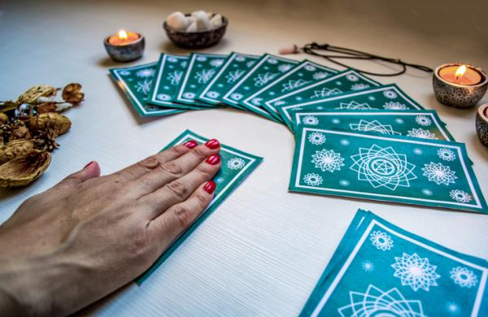
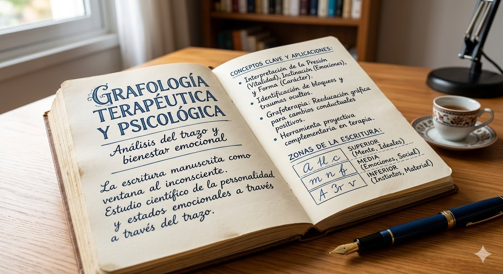

Servicios
Atención personalizada presencial y online

Medicina China
Sistema médico holístico de más de 2.500 años de historia que concibe la salud como un equilibrio dinámico entre el cuerpo, la mente y el entorno. Tratamos la causa raíz, no solo el síntoma.

Psicología Social Psicoanalítica y Parapsicología
Acompañamiento terapéutico para sanar traumas, fobias y patrones repetitivos mediante regresiones e hipnosis clínica reparadora, además de limpiezas energéticas y protección del campo energético personal y ambiental.

Terapias Energéticas
Técnicas de armonización y sanación del campo energético: Reiki presencial y a distancia, Flores de Bach, Constelaciones Familiares y limpiezas energéticas para restaurar tu equilibrio y bienestar.

Tarot Profesional
Lecturas de Tarot personalizadas, presenciales y online, para obtener claridad y orientación profunda sobre amor, trabajo, vínculos y decisiones de vida.

Astrología Evolutiva
Descubrí el mapa único de tu alma a través del estudio de tu cielo: Carta Natal, Revolución Solar y Sinastría para comprenderte y tomar el timón de tu vida.
Péndulo Radiestésico
Una de las herramientas de radiestesia más antiguas y efectivas: conecta con tu subconsciente y la sabiduría intuitiva para obtener respuestas claras, precisas y directas.

Grafología Terapéutica y Psicológica
El lenguaje secreto de tu escritura: análisis de personalidad, emociones y estado psíquico a través del trazo manuscrito, tan único como tu huella dactilar.
Trabajos Realizados
Resultados reales de nuestros tratamientos con acupuntura

Acupuntura Craneal para Alzheimer
Estimulación de áreas del cuero cabelludo correspondientes a la corteza cerebral: un apoyo natural y complementario para enfermedades neurodegenerativas como el Alzheimer.

Lifting Facial con Acupuntura
Rejuvenecimiento facial natural y no invasivo: estimula la producción de colágeno y elastina, tonifica los músculos faciales y mejora la microcirculación.

Lifting Facial con Máscara
Ritual de rejuvenecimiento que combina la estimulación facial con una máscara terapéutica para nutrir, hidratar y devolverle luminosidad a la piel.

Tratamiento de Alopecia con Acupuntura
La acupuntura estimula la circulación del cuero cabelludo y el flujo de Qi, favoreciendo la salud del folículo y el crecimiento natural del cabello.

Acupuntura para Parálisis Facial
Tratamiento con agujas en puntos faciales y sistémicos para recuperar el tono, la simetría y el movimiento muscular tras una parálisis facial.

Tratamiento de Moxa para Dolor de Espalda
La moxibustión aplica calor de artemisa sobre puntos del cuerpo para calentar los meridianos, aliviar el dolor muscular y articular de espalda y favorecer la circulación del Qi.